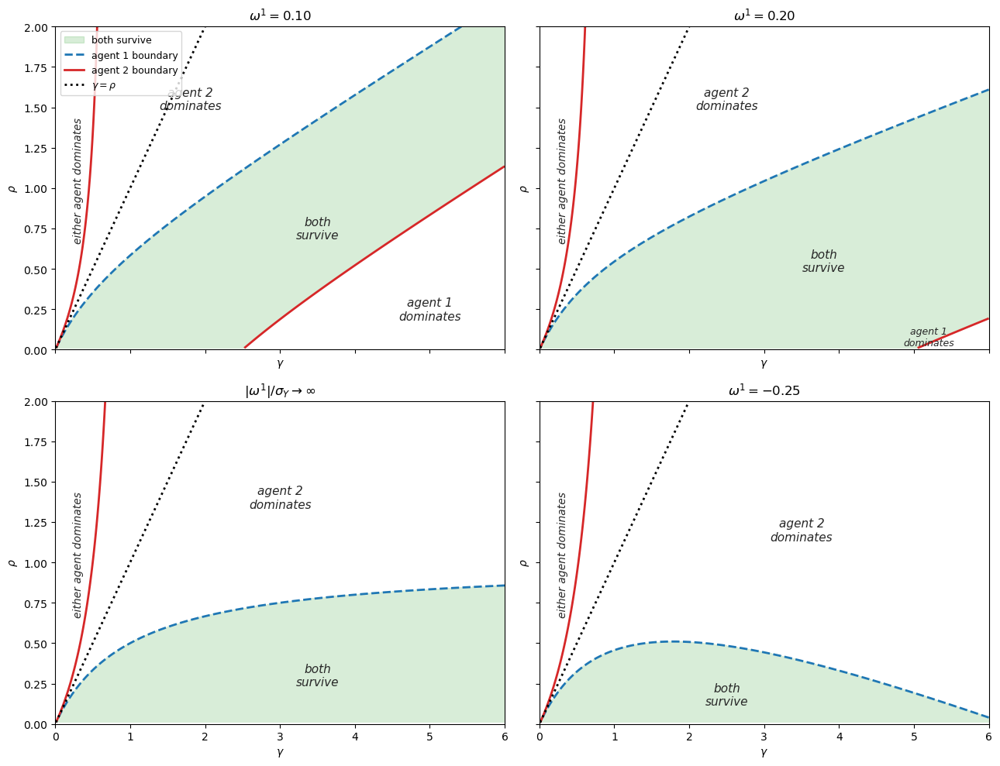
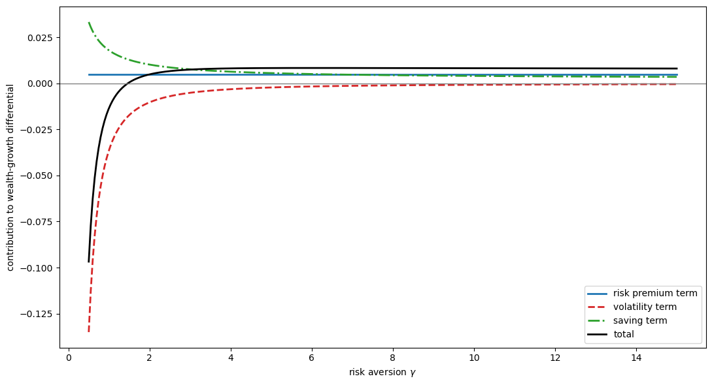
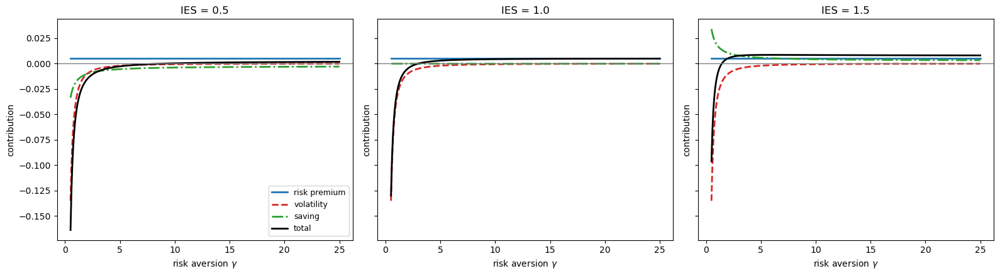
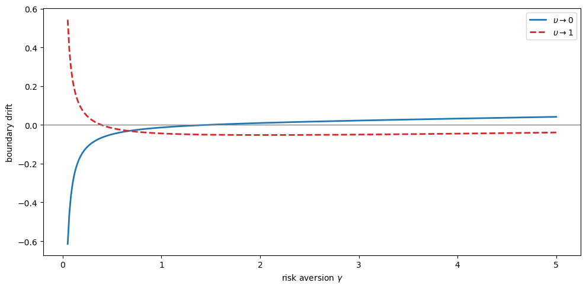
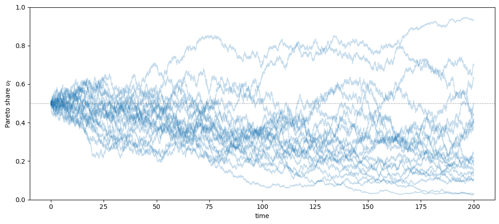
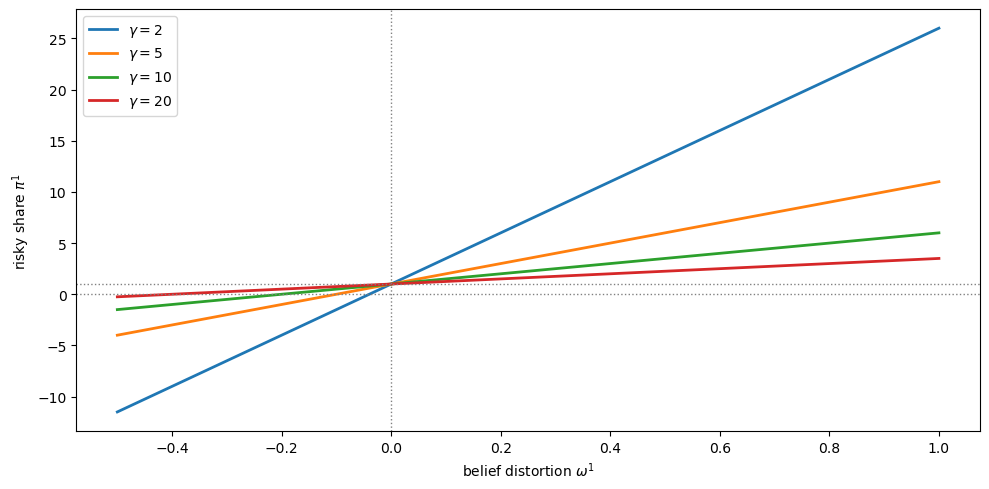
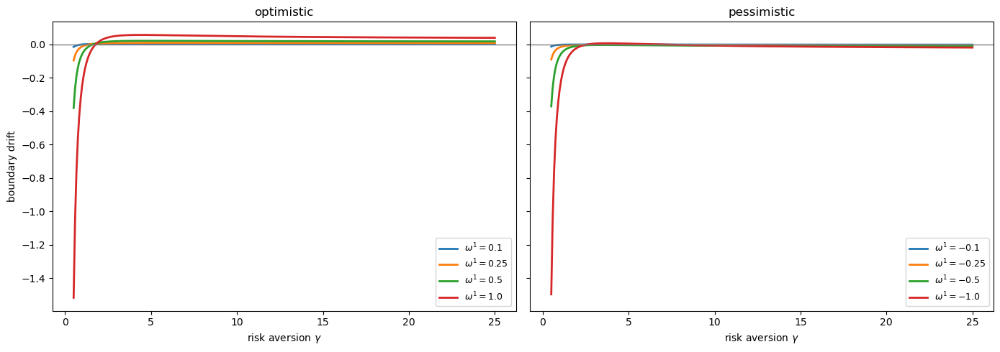
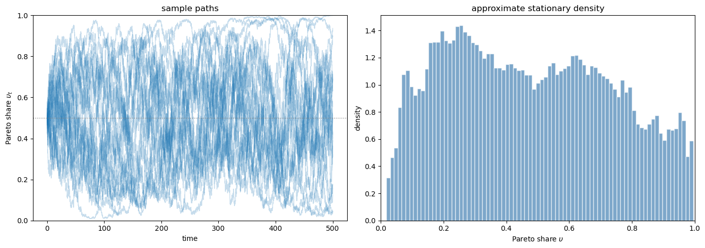

34. Survival and Long-Run Dynamics under Recursive Preferences#
34.1. Overview#
This lecture studies the theory of long-run survival in Borovička [2020].
The classical market selection hypothesis says that agents with less accurate beliefs are driven out of the market in the long run.
This result was established rigorously by Sandroni [2000] and Blume and Easley [2006] for economies with separable CRRA preferences.
Borovicka shows that the conclusion can fail under Epstein-Zin recursive preferences.
With recursive preferences, agents with distorted beliefs can survive and can even dominate.
The key mechanism is that recursive preferences separate risk aversion from the intertemporal elasticity of substitution.
That separation creates three channels that matter for survival:
The risk premium channel rewards the more optimistic agent for holding more of the risky asset.
The speculative volatility channel penalizes aggressive positions through log-return volatility.
The saving channel changes consumption and saving decisions when the IES differs from one.
Under separable preferences, only the first two channels remain.
Under recursive preferences, the saving channel can overturn market selection.
Note
The paper builds on the continuous-time recursive utility formulation of Duffie and Epstein [1992], using the planner’s problem approach of Dumas et al. [2000].
Important foundations for the market selection hypothesis were laid by De Long et al. [1991] and Blume and Easley [1992].
We start with some imports.
import numpy as np
import matplotlib.pyplot as plt
34.2. Environment#
The economy contains two infinitely lived agents, indexed by \(n \in \{1, 2\}\).
The agents have identical recursive preferences but different beliefs about aggregate endowment growth.
We write Borovička’s belief distortions \(u^n\) as \(\omega^n\).
34.2.1. Aggregate endowment#
Under the true probability measure \(P\), aggregate endowment satisfies
where \(W\) is a standard Brownian motion, \(\mu_Y\) is the drift, and \(\sigma_Y > 0\) is the volatility.
34.2.2. Heterogeneous beliefs#
Agent \(n\) believes that the drift is \(\mu_Y + \omega^n \sigma_Y\) instead of \(\mu_Y\).
The parameter \(\omega^n\) measures optimism when \(\omega^n > 0\) and pessimism when \(\omega^n < 0\).
Agent \(n\)’s subjective probability measure \(Q^n\) is defined by the Radon–Nikodym derivative
Under \(Q^n\), the process \(W_t^n = W_t - \omega^n t\) is a Brownian motion, and agent \(n\) perceives
An agent with \(\omega^n > 0\) is optimistic about endowment growth, while an agent with \(\omega^n < 0\) is pessimistic.
34.2.3. Recursive preferences#
Both agents have Epstein-Zin recursive preferences.
We use \(\gamma > 0\) for relative risk aversion, \(\rho > 0\) for the inverse of the IES, and \(\beta > 0\) for the time-preference rate.
The Duffie-Epstein-Zin felicity function is
where \(\nu\) is the endogenous discount rate.
Note
In discrete time, Epstein-Zin preferences aggregate current consumption with a certainty equivalent of future utility via a CES aggregator (see Doubts or Variability?).
In continuous time there is no “next-period \(V_{t+1}\),” so Duffie and Epstein [1992] recast the recursion as a felicity function \(F(C,\nu)\) that depends on the agent’s own continuation-value rate \(\nu\).
The two formulations encode the same separation of risk aversion \(\gamma\) from the inverse IES \(\rho\).
When \(\gamma = \rho\), preferences reduce to the standard separable CRRA case.
34.3. Planner’s problem#
Following Dumas et al. [2000], we study equilibrium allocations through a social planner’s problem.
The planner chooses consumption shares \(z^1\) and \(z^2 = 1 - z^1\) and discount-rate processes \(\nu^n\) for the two agents.
34.3.1. Modified discount factors#
It is convenient to absorb belief distortions into the modified discount factors \(\tilde{\lambda}^n = \lambda^n M^n\), where \(M^n\) is the Radon-Nikodym derivative (34.2).
These processes satisfy
Exercise 34.1
Derive (34.4).
Hint: Use \(\log \tilde{\lambda}^n = \log \lambda^n + \log M^n\). The Pareto weight \(\lambda^n\) evolves as \(d\log \lambda_t^n = -\nu_t^n \, dt\), and \(\log M_t^n\) is given by (34.2).
Solution
From the definition \(\tilde{\lambda}^n = \lambda^n M^n\), we have
The Pareto weight satisfies \(d\log \lambda_t^n = -\nu_t^n \, dt\).
From (34.2), \(\log M_t^n = -\frac{1}{2}|\omega^n|^2 t + \omega^n W_t\), so
Adding the two:
34.3.3. HJB equation#
Homotheticity reduces the planner’s problem to a nonlinear ODE in the single state variable \(\upsilon\).
Because each agent’s utility is homogeneous of degree \(1-\gamma\) in consumption, the planner’s value function factors as \(J(\upsilon, Y) = \tilde{J}(\upsilon) \cdot Y^{1-\gamma}/(1-\gamma)\), eliminating \(Y\) as a state variable.
34.3.3.1. From discrete to continuous time#
In discrete time, a planner maximizes a weighted sum of agents’ utilities by choosing allocations at each date.
The Bellman equation is
In continuous time, the period length shrinks to \(dt\).
The “flow payoff” over \([t, t+dt)\) becomes \(\left[\upsilon F(z^1, \nu^1) + (1-\upsilon)F(z^2, \nu^2)\right] dt\), where \(F\) is the Duffie-Epstein-Zin felicity (34.3).
The expected change in the value function over \(dt\) is captured by the infinitesimal generator \(\mathcal{L}\).
For a diffusion \(d\upsilon = m \, dt + s \, dW\), Itô’s lemma gives
where \(m\) and \(s\) are the drift and diffusion of the Pareto share.
This is the continuous-time analogue of \(\beta \, \mathbb{E}[\tilde{J}(\upsilon')] - \tilde{J}(\upsilon)\): it measures how the value function drifts and fluctuates as \(\upsilon\) evolves.
Setting flow payoff plus expected capital gain equal to zero gives the schematic HJB equation:
subject to \(z^1 + z^2 \leq 1\).
34.3.3.2. Exact reduced ODE#
Proposition 2.3 of Borovička [2020] gives the exact HJB equation after substituting the homogeneity reduction \(J(\tilde{\lambda}, Y) = (\tilde{\lambda}^1 + \tilde{\lambda}^2) Y^{1-\gamma} \tilde{J}(\upsilon)\) and the dynamics of \(\upsilon\) and \(Y\):
subject to \(z^1 + z^2 \leq 1\).
The first line is the flow payoff from the two agents’ felicity functions.
The second line multiplies \(\tilde{J}(\upsilon)\) by a term that combines the agents’ discount rates, belief-weighted endowment drift, and a variance correction — these arise from absorbing the \(Y^{1-\gamma}\) factor via Itô’s lemma.
The third line multiplies \(\tilde{J}'(\upsilon)\) by the drift of the Pareto share, which depends on the difference in discount rates and the belief-weighted response to endowment risk.
The fourth line multiplies \(\tilde{J}''(\upsilon)\) by the squared diffusion of the Pareto share.
The boundary conditions are \(\tilde{J}(0) = \tilde{V}^2\) and \(\tilde{J}(1) = \tilde{V}^1\), where \(\tilde{V}^n\) is the continuation value in the homogeneous economy populated by agent \(n\) alone.
This is the continuous-time counterpart of the discrete-time planner’s problem in Blume and Easley [2006] (see also Heterogeneous Beliefs and Financial Markets).
34.4. Survival conditions#
The central result characterizes survival by the boundary behavior of \(m_\vartheta(\upsilon)\).
Proposition 34.1
Define the following repelling conditions (i) and (ii) and their attracting counterparts (i’) and (ii’):
Then:
(a) If (i) and (ii) hold, both agents survive under \(P\).
(b) If (i) and (ii’) hold, agent 1 dominates in the long run under \(P\).
© If (i’) and (ii) hold, agent 2 dominates in the long run under \(P\).
(d) If (i’) and (ii’) hold, each agent dominates with strictly positive probability.
The proof uses the Feller classification of boundary behavior for diffusions, as in Karlin and Taylor [1981].
Condition (i) says that when agent 1 is close to extinction, there is a force pushing her share back up.
Condition (ii) says that when agent 1 is close to absorbing the whole economy, there is a force pushing her share back down.
When both forces are present, the Pareto share is recurrent and both agents survive.
34.5. Wealth dynamics decomposition#
We now rewrite the survival conditions from Proposition 34.1 in terms of equilibrium wealth dynamics.
Agent 1 survives near extinction if and only if her wealth grows faster than agent 2’s when she is negligibly small.
When \(\upsilon \searrow 0\), prices are set entirely by agent 2, as if the economy were homogeneous.
Agent 1 is a price-taker in agent 2’s economy.
Let \(m_A^n(\upsilon)\) denote the expected log growth rate of agent \(n\)’s wealth.
The difference decomposes into two channels:
The first term measures how much faster agent 1’s portfolio grows.
The second measures how much less agent 1 consumes out of wealth — a lower consumption-wealth ratio means more saving and faster wealth accumulation.
When this total difference is positive, agent 1 survives; when negative, she shrinks toward extinction.
Exercise 34.3
Derive (34.9).
Let \(A^n\) denote agent \(n\)’s wealth and \(C^n\) her consumption.
The budget constraint is \(dA^n = A^n dR^n - C^n dt\), where \(dR^n\) is the return on agent \(n\)’s portfolio.
Define the consumption-wealth ratio \(c^n = C^n / A^n = (y^n)^{-1}\).
Show that \(d\log A^n = m_R^n \, dt - (y^n)^{-1} dt + \ldots\), so the difference in expected log wealth growth is \(m_A^1 - m_A^2 = (m_R^1 - m_R^2) + [(y^2)^{-1} - (y^1)^{-1}]\).
Solution
Dividing the budget constraint by \(A^n\):
By Itô’s lemma, \(d\log A^n = \frac{dA^n}{A^n} - \frac{1}{2}\left(\frac{dA^n}{A^n}\right)^2\).
Write \(dR^n = m_R^n \, dt + \sigma_R^n \, dW\) (the portfolio return under \(P\)).
Then
Taking the difference for agents 1 and 2:
The volatility terms \(\tfrac{1}{2}[(\sigma_R^1)^2 - (\sigma_R^2)^2]\) are absorbed into \(m_R^1 - m_R^2\) when we define \(m_R^n\) as the expected log portfolio return (i.e., the drift of \(\log R^n\) rather than the arithmetic return), giving (34.9).
34.5.1. Portfolio returns#
At the boundary \(\upsilon \searrow 0\), the difference in expected log portfolio returns is
An optimistic agent (\(\omega^1 > \omega^2\)) overweights the risky asset by \((\omega^1 - \omega^2)/(\gamma \sigma_Y)\) relative to agent 2 and earns the equity risk premium on that extra exposure.
The subtracted volatility penalty reflects the cost of holding a more extreme portfolio: higher variance of log returns drags down expected log wealth growth.
This term depends on risk aversion \(\gamma\) but not on the IES, because portfolio choice is determined by risk aversion alone.
Exercise 34.4
Derive (34.10).
At the boundary \(\upsilon \searrow 0\), agent \(n\)’s optimal risky-asset share is \(\pi^n = 1 + (\omega^n - \omega^2)/(\gamma \sigma_Y)\) (see (34.14)).
Let \(\bar{\mu}_R = \mu_Y + \gamma \sigma_Y^2 - \omega^2 \sigma_Y\) denote the expected return on the risky asset under \(P\), and \(r\) the risk-free rate.
The continuously rebalanced portfolio has expected log return \(m_R^n = r + \pi^n(\bar{\mu}_R - r) - \frac{1}{2}(\pi^n)^2 \sigma_Y^2\).
Compute \(m_R^1 - m_R^2\) and simplify.
Solution
Using \(m_R^n = r + \pi^n(\bar{\mu}_R - r) - \frac{1}{2}(\pi^n)^2 \sigma_Y^2\), the difference is
The difference in risky shares is \(\pi^1 - \pi^2 = (\omega^1 - \omega^2)/(\gamma \sigma_Y)\).
The arithmetic equity premium is \(\bar{\mu}_R - r = \gamma \sigma_Y^2 - \omega^2 \sigma_Y\), so:
For the volatility term, write \((\pi^1)^2 - (\pi^2)^2 = (\pi^1 - \pi^2)(\pi^1 + \pi^2)\) and note \(\pi^1 + \pi^2 = 2 + (\omega^1 + \omega^2 - 2\omega^2)/(\gamma \sigma_Y)\).
After simplification:
Combining the two pieces gives (34.10).
34.5.2. Consumption-wealth ratios#
The difference in consumption-wealth ratios at the boundary is
The term in brackets is the difference in subjective expected portfolio returns — what agent 1 believes she earns relative to agent 2.
The factor \((1-\rho)/\rho\) translates this perceived return advantage into a saving response.
When IES \(> 1\) (\(\rho < 1\)), the factor is positive: a higher perceived return makes the agent save more, because the substitution effect dominates the income effect.
When IES \(< 1\) (\(\rho > 1\)), the factor is negative: the income effect dominates and the agent saves less, working against survival.
When IES \(= 1\) (\(\rho = 1\)), the two effects cancel and the saving channel vanishes entirely.
This is the channel through which recursive preferences alter survival outcomes by separating \(\gamma\) from \(\rho\).
Exercise 34.5
Derive (34.11).
In the homogeneous economy populated by agent 2, the consumption-wealth ratio is \((y(0))^{-1} = \beta - (1-\rho)\mu_V^2\), where \(\mu_V^2\) is agent 2’s expected log return on wealth.
Agent 1, as a negligible price-taker, has consumption-wealth ratio \((y^1)^{-1} = \beta - (1-\rho)\mu_V^1\), where \(\mu_V^1\) is her own expected log return.
Use \((y^2)^{-1} - (y^1)^{-1} = (1-\rho)(\mu_V^1 - \mu_V^2)\) and express \(\mu_V^1 - \mu_V^2\) in terms of agent 1’s subjective expected excess return.
Hint: Under agent 1’s beliefs, her portfolio earns an extra \((\omega^1 - \omega^2)\sigma_Y + (\omega^1 - \omega^2)^2/(2\gamma)\) in expected log returns relative to agent 2’s portfolio.
Solution
The consumption-wealth ratio for agent \(n\) satisfies \((y^n)^{-1} = \beta - (1-\rho)\mu_V^n\), where \(\mu_V^n\) is the expected log return on agent \(n\)’s wealth under her own subjective measure.
Taking the difference:
Agent 1’s subjective expected log portfolio return exceeds agent 2’s by the amount she believes she gains from tilting toward the risky asset.
Her extra risky share is \(\pi^1 - 1 = (\omega^1 - \omega^2)/(\gamma\sigma_Y)\), and under her subjective measure \(Q^1\) the risky asset’s expected excess log return is \((\gamma\sigma_Y^2 + (\omega^1 - \omega^2)\sigma_Y - \omega^2\sigma_Y) - r - \frac{1}{2}\sigma_Y^2\).
After simplification, the subjective expected log return difference is
Substituting and dividing through by \(\rho\) (from the relationship between \((y^n)^{-1}\) and \(\beta\)):
34.5.3. Two comparative statics#
Survival depends on \(\gamma\), \(\rho\), and the signal-to-noise ratios \(\omega^1 / \sigma_Y\) and \(\omega^2 / \sigma_Y\), not on \(\omega^1\), \(\omega^2\), and \(\sigma_Y\) separately.
The survival conditions do not depend on \(\beta\) or \(\mu_Y\), which affect the level of consumption and prices but not relative wealth dynamics at the boundary.
def portfolio_return_diff(ω_1, ω_2, γ, σ_y):
"""
Difference in expected log portfolio returns at the boundary.
"""
Δω = ω_1 - ω_2
risky_share_diff = Δω / (γ * σ_y)
risk_premium = γ * σ_y**2 - ω_2 * σ_y
volatility_term = (Δω / γ) * (σ_y + 0.5 * Δω / γ)
return risky_share_diff * risk_premium - volatility_term
def saving_channel(ω_1, ω_2, γ, ρ, σ_y):
"""
Difference in consumption-wealth ratios at the boundary.
"""
Δω = ω_1 - ω_2
subjective_return_diff = Δω * σ_y + Δω**2 / (2 * γ)
return (1 - ρ) / ρ * subjective_return_diff
def boundary_drift(ω_1, ω_2, γ, ρ, σ_y):
"""
Boundary drift m_ϑ when agent 1 becomes negligible.
Positive drift means agent 1 survives (repelling boundary).
"""
return γ * (
portfolio_return_diff(ω_1, ω_2, γ, σ_y)
+ saving_channel(ω_1, ω_2, γ, ρ, σ_y)
)
34.6. Survival regions#
A central contribution of Borovička [2020] is the characterization of survival regions in the \((\gamma, \rho)\) plane.
Under separable preferences, \(\gamma = \rho\), the agent with more accurate beliefs always dominates.
Under recursive preferences, all four outcomes in Proposition 34.1 can occur.
Figure 2 in the paper studies the case where agent 2 has correct beliefs, so \(\omega^2 = 0\).
The next cell follows that figure.
def compute_survival_boundary(ω_1, ω_2, σ_y, γ_grid, boundary="lower"):
"""
Compute the curve in (γ, ρ) space where the boundary drift is zero.
For boundary='lower', agent 1 is the small agent.
For boundary='upper', agent 2 is the small agent.
"""
ρ_boundary = []
if boundary == "lower":
small_agent = (ω_1, ω_2)
else:
small_agent = (ω_2, ω_1)
ω_small, ω_large = small_agent
for γ in γ_grid:
pr = portfolio_return_diff(ω_small, ω_large, γ, σ_y)
Δω = ω_small - ω_large
subj_ret = Δω * σ_y + Δω**2 / (2 * γ)
if abs(subj_ret) < 1e-14:
ρ_boundary.append(np.nan)
continue
denom = subj_ret - pr
if abs(denom) < 1e-14:
ρ_boundary.append(np.nan)
else:
ρ_boundary.append(subj_ret / denom)
return np.asarray(ρ_boundary)
def compute_limit_boundary(γ_grid, boundary="lower"):
"""
Boundary curves for the limit |ω_1| / σ_y -> ∞.
This is equivalent to the constant-endowment case discussed in the paper.
"""
if boundary == "lower":
return γ_grid / (1 + γ_grid)
ρ = np.full_like(γ_grid, np.nan, dtype=float)
mask = γ_grid < 1
ρ[mask] = γ_grid[mask] / (1 - γ_grid[mask])
return ρ

Fig. 34.1 Survival regions corresponding to Figure 2 in Borovicka (2020)#
Each panel plots two curves in the \((\gamma, \rho)\) plane for a different value of agent 1’s belief distortion \(\omega^1\) (agent 2 has correct beliefs, \(\omega^2 = 0\)).
The dashed curve (blue) is where the boundary drift at \(\upsilon = 0\) equals zero — condition (i) in Proposition 34.1.
The solid curve (red) is where the boundary drift at \(\upsilon = 1\) equals zero — condition (ii).
The shaded region between the two curves is where both agents survive.
The dotted diagonal \(\gamma = \rho\) is the separable CRRA case, along which the agent with more accurate beliefs always dominates.
Moderate optimism (\(\omega^1 = 0.10\)) produces a wide coexistence region that extends across most of the \(\gamma\) range.
Stronger optimism (\(\omega^1 = 0.20\)) narrows the region: the agent 2 boundary shifts out of the plotted range for moderate and large \(\gamma\), shrinking the set of \((\gamma, \rho)\) pairs where both agents coexist.
In the limit \(|\omega^1|/\sigma_Y \to \infty\) (bottom-left), the boundaries simplify to closed-form expressions.
The coexistence region narrows but extends to large \(\gamma\) values below the agent 2 boundary curve.
Pessimistic distortions (\(\omega^1 = -0.25\), bottom-right) can also survive, but only in a much narrower part of the parameter space.
34.7. Three survival channels#
The decomposition above can be visualized directly.
def decompose_survival(ω_1, ω_2, γ_grid, ρ, σ_y):
"""
Decompose the wealth-growth differential in proposition 3.4.
"""
Δω = ω_1 - ω_2
risk_premium_term = Δω * (γ_grid * σ_y - ω_2) / γ_grid
volatility_term = -(Δω / γ_grid) * (σ_y + 0.5 * Δω / γ_grid)
saving_term = (1 - ρ) / ρ * (Δω * σ_y + Δω**2 / (2 * γ_grid))
total = risk_premium_term + volatility_term + saving_term
return risk_premium_term, volatility_term, saving_term, total
ω_1 = 0.25
ω_2 = 0.0
ρ = 0.67
σ_y = 0.02
γ_grid = np.linspace(0.5, 15.0, 300)
risk_term, vol_term, save_term, total = decompose_survival(
ω_1, ω_2, γ_grid, ρ, σ_y
)
fig, ax = plt.subplots(figsize=(11, 6))
ax.plot(γ_grid, risk_term, color="C0", lw=2, label="risk premium term")
ax.plot(γ_grid, vol_term, "--", color="C3", lw=2, label="volatility term")
ax.plot(γ_grid, save_term, "-.", color="C2", lw=2, label="saving term")
ax.plot(γ_grid, total, color="black", lw=2, label="total")
ax.axhline(0, color="gray", lw=1)
ax.set_xlabel(r"risk aversion $\gamma$")
ax.set_ylabel("contribution to wealth-growth differential")
ax.legend()
plt.tight_layout()
plt.show()

This figure decomposes the boundary drift at \(\upsilon = 0\) into three terms for an optimistic agent (\(\omega^1 = {0.25}\), \(\omega^2 = 0\)) with IES \(= 1/\rho \approx 1.49\) and \(\sigma_Y = 0.02\).
The risk premium term (blue) is positive throughout because the optimistic agent overweights the risky asset and earns the equity premium.
The volatility term (red dashed) is negative and large at low \(\gamma\), reflecting the cost of holding a volatile portfolio.
The saving term (green dash-dot) is positive when IES \(> 1\) because the optimistic agent perceives a high return on wealth and saves more aggressively.
The total (black) crosses zero at the critical \(\gamma\) below which the volatility penalty dominates and the agent cannot survive.
34.8. Varying the IES#
The sign of the saving term is pinned down by the IES.
fig, axes = plt.subplots(1, 3, figsize=(16, 4.5), sharey=True)
ω_1 = 0.25
ω_2 = 0.0
σ_y = 0.02
γ_grid = np.linspace(0.5, 25.0, 300)
ies_values = [0.5, 1.0, 1.5]
for idx, ies in enumerate(ies_values):
ρ = 1.0 / ies
risk_term, vol_term, save_term, total = decompose_survival(
ω_1, ω_2, γ_grid, ρ, σ_y
)
ax = axes[idx]
ax.plot(γ_grid, risk_term, color="C0", lw=2, label="risk premium")
ax.plot(γ_grid, vol_term, "--", color="C3", lw=2, label="volatility")
ax.plot(γ_grid, save_term, "-.", color="C2", lw=2, label="saving")
ax.plot(γ_grid, total, color="black", lw=2, label="total")
ax.axhline(0, color="gray", lw=1)
ax.set_title(f"IES = {ies:.1f}", fontsize=12)
ax.set_xlabel(r"risk aversion $\gamma$")
ax.set_ylabel("contribution")
axes[0].legend(fontsize=9)
plt.tight_layout()
plt.show()

Fig. 34.2 Boundary decomposition for different IES values#
Each panel shows the same three-term decomposition as the previous figure, but now for three different values of the IES (\(\omega^1 = 0.25\), \(\omega^2 = 0\), \(\sigma_Y = 0.02\)).
Left panel (IES \(= 0.5\)): the saving term is negative, so the optimistic agent actually saves less, working against survival.
Center panel (IES \(= 1.0\)): the saving term vanishes entirely, so only the portfolio return and volatility channels remain.
This eliminates the saving channel but does not by itself reproduce the full separable CRRA benchmark, which requires \(\gamma = \rho\) (i.e., IES \(= 1/\gamma\)), not merely \(\rho = 1\).
Right panel (IES \(= 1.5\)): the saving term is positive and shifts the total drift upward, expanding the range of \(\gamma\) values for which the optimistic agent survives.
34.9. Asymptotic results#
Borovicka derives several useful asymptotic results.
As \(\gamma \searrow 0\), each agent dominates with strictly positive probability.
As \(\gamma \nearrow \infty\), the relatively more optimistic agent dominates.
As \(\rho \searrow 0\), the relatively more optimistic agent always survives.
The relatively more pessimistic agent can also survive when risk aversion is sufficiently low.
As \(\rho \nearrow \infty\), a nondegenerate long-run equilibrium cannot exist.
The next figure illustrates the first result by plotting both boundary drifts as \(\gamma\) becomes small.
ω_1 = 0.25
ω_2 = 0.0
ρ = 0.67
σ_y = 0.02
γ_grid = np.linspace(0.05, 5.0, 300)
drift_at_0 = np.array([boundary_drift(ω_1, ω_2, γ, ρ, σ_y) for γ in γ_grid])
drift_at_1 = np.array([-boundary_drift(ω_2, ω_1, γ, ρ, σ_y) for γ in γ_grid])
fig, ax = plt.subplots(figsize=(10, 5))
ax.plot(γ_grid, drift_at_0, color="C0", lw=2, label=r"$\upsilon \to 0$")
ax.plot(γ_grid, drift_at_1, "--", color="C3", lw=2, label=r"$\upsilon \to 1$")
ax.axhline(0, color="gray", lw=1)
ax.set_xlabel(r"risk aversion $\gamma$")
ax.set_ylabel("boundary drift")
ax.legend()
plt.tight_layout()
plt.show()

Fig. 34.3 Boundary drifts for small risk aversion#
This figure plots the two boundary drifts as a function of \(\gamma\) (\(\omega^1 = 0.25\), \(\omega^2 = 0\), IES \(\approx 1.49\)).
The solid blue curve is the drift \(m_\vartheta\) at \(\upsilon \to 0\) (agent 1 near extinction); coexistence requires this to be positive (condition (i)).
The dashed red curve is the drift \(m_\vartheta\) at \(\upsilon \to 1\) (agent 2 near extinction); coexistence requires this to be negative (condition (ii)).
The figure illustrates asymptotic result 1.
For small \(\gamma\), the blue curve is negative and the red curve is positive.
Both boundaries are attracting: near \(\upsilon = 0\) the negative drift pulls \(\upsilon\) toward 0, and near \(\upsilon = 1\) the positive drift pushes \(\upsilon\) toward 1.
This is outcome (d) in Proposition 34.1: neither boundary is repelling, so whichever agent happens to get ahead early will dominate, with each agent having strictly positive probability of dominance depending on the realized Brownian path.
As \(\gamma\) increases past roughly 1, the blue curve crosses zero and becomes positive while the red curve stays negative.
Now both boundaries are repelling and we enter the coexistence region — outcome (a).
34.10. The separable case#
When \(\gamma = \rho\), the model collapses to the separable CRRA benchmark.
In that case, the log-odds process becomes
The drift is constant and depends only on the relative entropy of the two belief distortions.
The agent with the smaller \(|\omega^n|\) dominates under \(P\).
If the two agents have equal magnitudes of belief distortions, neither becomes extinct almost surely, but no nondegenerate stationary wealth distribution exists.
def simulate_crra_pareto(ω_1, ω_2, T, dt, n_paths, seed=42):
"""
Simulate Pareto-share dynamics in the separable benchmark.
"""
rng = np.random.default_rng(seed)
n_steps = int(T / dt)
t_grid = np.linspace(0, T, n_steps + 1)
drift = 0.5 * (ω_2**2 - ω_1**2)
volatility = ω_1 - ω_2
θ = np.zeros((n_paths, n_steps + 1))
dW = rng.normal(0.0, np.sqrt(dt), size=(n_paths, n_steps))
for t in range(n_steps):
θ[:, t + 1] = θ[:, t] + drift * dt + volatility * dW[:, t]
υ_paths = 1.0 / (1.0 + np.exp(-θ))
return t_grid, υ_paths
ω_1 = 0.10
ω_2 = 0.0
t_grid, υ_paths = simulate_crra_pareto(ω_1, ω_2, T=200, dt=0.01, n_paths=50)
fig, ax = plt.subplots(figsize=(11, 5))
for i in range(20):
ax.plot(t_grid, υ_paths[i], color="C0", alpha=0.25, lw=1)
ax.axhline(0.5, color="gray", linestyle=":", lw=1)
ax.set_xlabel("time")
ax.set_ylabel(r"Pareto share $\upsilon_t$")
ax.set_ylim(0, 1)
plt.tight_layout()
plt.show()

Fig. 34.4 Pareto-share paths in the separable benchmark#
This figure simulates 20 sample paths of the Pareto share \(\upsilon_t\) under separable CRRA preferences (\(\gamma = \rho\)) with \(\omega^1 = 0.10\) and \(\omega^2 = 0\).
Agent 2 has correct beliefs, so the log-odds drift is negative and all paths trend toward \(\upsilon = 0\).
Agent 1 is driven to extinction — the classical market-selection result of Blume and Easley [2006].
34.11. Asset pricing implications#
As one agent becomes negligible, current prices converge to those of the homogeneous economy populated by the large agent.
When agent 2 is the large agent, Proposition 5.1 in Borovička [2020] implies
and
The aggregate wealth dynamics also converge to those of the homogeneous economy:
Proposition 5.3 then gives the negligible agent’s own consumption-saving and portfolio choices.
Her consumption-wealth ratio converges to
The small agent’s risky-asset share converges to
Hence optimism implies leverage, while sufficiently strong pessimism implies shorting.
ω_2 = 0.0
σ_y = 0.02
ω_grid = np.linspace(-0.5, 1.0, 300)
fig, ax = plt.subplots(figsize=(10, 5))
for γ in [2, 5, 10, 20]:
π_1 = 1 + (ω_grid - ω_2) / (γ * σ_y)
ax.plot(ω_grid, π_1, lw=2, label=rf"$\gamma = {γ}$")
ax.axhline(1.0, color="gray", linestyle=":", lw=1)
ax.axhline(0.0, color="gray", linestyle=":", lw=1)
ax.axvline(0.0, color="gray", linestyle=":", lw=1)
ax.set_xlabel(r"belief distortion $\omega^1$")
ax.set_ylabel(r"risky share $\pi^1$")
ax.legend()
plt.tight_layout()
plt.show()

Fig. 34.5 Limiting risky-asset shares of the small agent#
This figure plots the limiting risky-asset share \(\pi^1\) of the negligible agent as a function of her belief distortion \(\omega^1\) (\(\omega^2 = 0\), \(\sigma_Y = 0.02\)), for four levels of risk aversion.
At \(\omega^1 = 0\) the agent agrees with agent 2 and holds the market portfolio (\(\pi^1 = 1\)).
Optimism (\(\omega^1 > 0\)) leads to leverage (\(\pi^1 > 1\)), while sufficient pessimism (\(\omega^1 < 0\)) leads to shorting (\(\pi^1 < 0\)).
Higher risk aversion compresses these deviations toward one.
34.12. Optimistic and pessimistic distortions#
Optimistic and pessimistic beliefs affect survival asymmetrically.
An optimistic agent benefits from the risk premium term and, when IES \(> 1\), from the saving term as well.
A pessimistic agent gives up the risk premium and can survive only if the saving effect is strong enough to offset that loss.
fig, axes = plt.subplots(1, 2, figsize=(14, 5), sharey=True)
σ_y = 0.02
ω_2 = 0.0
ρ = 0.67
γ_grid = np.linspace(0.5, 25.0, 300)
ax = axes[0]
for ω_1 in [0.1, 0.25, 0.5, 1.0]:
_, _, _, total = decompose_survival(ω_1, ω_2, γ_grid, ρ, σ_y)
ax.plot(γ_grid, total, lw=2, label=rf"$\omega^1 = {ω_1}$")
ax.axhline(0, color="gray", lw=1)
ax.set_title("optimistic", fontsize=12)
ax.set_xlabel(r"risk aversion $\gamma$")
ax.set_ylabel("boundary drift")
ax.legend(fontsize=9)
ax = axes[1]
for ω_1 in [-0.1, -0.25, -0.5, -1.0]:
_, _, _, total = decompose_survival(ω_1, ω_2, γ_grid, ρ, σ_y)
ax.plot(γ_grid, total, lw=2, label=rf"$\omega^1 = {ω_1}$")
ax.axhline(0, color="gray", lw=1)
ax.set_title("pessimistic", fontsize=12)
ax.set_xlabel(r"risk aversion $\gamma$")
ax.legend(fontsize=9)
plt.tight_layout()
plt.show()

Fig. 34.6 Total boundary drift for optimistic and pessimistic distortions#
Both panels plot the total boundary drift at \(\upsilon = 0\) as a function of \(\gamma\) (IES \(\approx 1.49\), \(\omega^2 = 0\)).
Where the curve is positive, agent 1 survives near extinction.
Left panel (optimistic agent): larger \(\omega^1\) means a bigger bet on the risky asset, so the volatility penalty dominates at low \(\gamma\) but the drift turns positive once \(\gamma\) is large enough.
Right panel (pessimistic agent): a pessimistic agent gives up the risk premium by underweighting the risky asset, so the drift is negative for most of the parameter space and survival requires saving motives strong enough to offset the portfolio losses.
34.13. Long-run consumption distribution#
When both agents survive, the Pareto share keeps moving across the whole interval \((0, 1)\).
The next simulation is only a toy approximation.
It interpolates the drift between its two boundary values, so it illustrates the recurrence logic without solving the full equilibrium ODE.
def simulate_pareto_share_toy(ω_1, ω_2, γ, ρ, σ_y, T, dt, n_paths=20, seed=42):
"""
Simulate a toy Pareto-share process by interpolating boundary drifts.
"""
rng = np.random.default_rng(seed)
n_steps = int(T / dt)
t_grid = np.linspace(0, T, n_steps + 1)
volatility = ω_1 - ω_2
m_0 = boundary_drift(ω_1, ω_2, γ, ρ, σ_y)
m_1 = -boundary_drift(ω_2, ω_1, γ, ρ, σ_y)
θ = np.zeros((n_paths, n_steps + 1))
dW = rng.normal(0.0, np.sqrt(dt), size=(n_paths, n_steps))
for t in range(n_steps):
υ = 1.0 / (1.0 + np.exp(-θ[:, t]))
drift = m_0 * (1 - υ) + m_1 * υ
θ[:, t + 1] = θ[:, t] + drift * dt + volatility * dW[:, t]
υ_paths = 1.0 / (1.0 + np.exp(-θ))
return t_grid, υ_paths
ω_1 = 0.25
ω_2 = 0.0
γ = 5.0
ρ = 0.67
σ_y = 0.02
t_grid, υ_paths = simulate_pareto_share_toy(
ω_1, ω_2, γ, ρ, σ_y, T=500, dt=0.05, n_paths=50, seed=42
)
fig, axes = plt.subplots(1, 2, figsize=(14, 5))
ax = axes[0]
for i in range(20):
ax.plot(t_grid, υ_paths[i], color="C0", alpha=0.25, lw=1)
ax.axhline(0.5, color="gray", linestyle=":", lw=1)
ax.set_title("sample paths", fontsize=12)
ax.set_xlabel("time")
ax.set_ylabel(r"Pareto share $\upsilon_t$")
ax.set_ylim(0, 1)
ax = axes[1]
_, υ_long = simulate_pareto_share_toy(
ω_1, ω_2, γ, ρ, σ_y, T=2000, dt=0.05, n_paths=5, seed=123
)
υ_stationary = υ_long[:, υ_long.shape[1] // 2:].ravel()
ax.hist(υ_stationary, bins=80, density=True, color="steelblue",
edgecolor="white", alpha=0.7)
ax.set_title("approximate stationary density", fontsize=12)
ax.set_xlabel(r"Pareto share $\upsilon$")
ax.set_ylabel("density")
ax.set_xlim(0, 1)
plt.tight_layout()
plt.show()

Fig. 34.7 A toy stationary Pareto-share simulation#
The left panel shows 20 sample paths of the Pareto share \(\upsilon_t\) under parameters inside the coexistence region (\(\omega^1 = 0.25\), \(\omega^2 = 0\), \(\gamma = 5\), IES \(\approx 1.49\)).
Unlike the separable case in Fig. 34.4, the paths do not drift to zero — they repeatedly visit a wide range of values, bouncing between the two repelling boundaries.
The right panel approximates the stationary density by pooling the second half of longer simulations.
The interior mode is consistent with neither agent being driven to extinction.
However, this toy interpolation only illustrates the recurrence logic; it does not reproduce the quantitative stationary consumption-share density in Figure 4 of Borovička [2020], which requires solving the full interior equilibrium ODE.
34.14. Summary#
Recursive preferences weaken the classical market-selection result.
The portfolio return channel still rewards more optimistic beliefs.
The volatility channel still penalizes aggressive positions.
But when IES \(> 1\), the saving channel can be strong enough to keep a distorted-belief agent alive.
This is why recursive-preference economies can support stationary long-run wealth distributions with persistent heterogeneity in beliefs and portfolio positions.